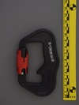
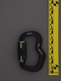
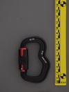

| Image | Summary | ||||
|---|---|---|---|---|---|
|  | Finsterwalder & Charly Snaplock | bowed spine | full-auto | twist | designed for withstanding many load cycles |
|  | Finsterwalder & Charly Unilock (green gate) | S-spine | full-auto | twist | paragliding carabiner with 45 deg offset gate |
|  | Finsterwalder & Charly Unilock (red gate) | S-spine | full-auto | twist | paragliding carabiner with 45 deg offset gate |